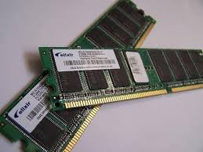

ذاكرة الوصول العشوائي وتعرف بذاكرة القراءة والكتابة، وهذا نوع من الذاكرة مؤقت يستعمل في الحواسيب، إذ أن المعلومات تٌفقد منها بمجرد انقطاع التيار عنه، فإذا أعيد مثلاً تشغيل الحاسوب فقدت المعلومات. يعتبر هذا النوع من الذاكرات مهم في تعيين أداء البرامج، فهو يعين كم من المساحة تستطيع البرامج استغلالها للتشغيل، لذلك يحرص المحترفون (خصوصاً من يتركز عملهم على برامج معقدة كالتصميم باستخدام برامج متقدمة مثل الفوتوشوب وثري دي ماكس وغيرها. على توفير أفضل الأنواع منها، ويحرصون أيضاً على زيادتها لأنها المسؤولة عن سرعة تنفيذ العمليات والمعالجة.
